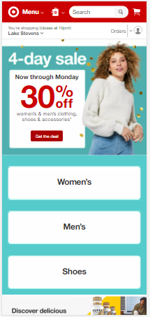
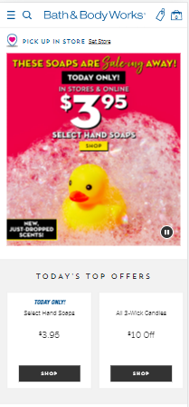

Design Principles
Emily Mason
Visual Heirarchy
 TargetTarget has done a great job of making sure the visual heirarchy of their website is effective. The eye is drawn immediately to their current sale, and then moves on to categories to shop. The search bar is easy to find, and the menu is simple.
Hick's Law
GoogleAs for Hick's law, Google is probably one of the best examples. The main thing they want you to see is the search bar- front, center, big and bold. The rest of the content on the page includes news stories that may be geared toward you (based on previous searches, of course).
Contrast
 Bath and Body WorksBath and Body Works has some great contrast going on with their mobile site. It seems like they know you're visiting the site on purpose, and they want to make the current sale pop. They've done a great job, as the red and yellow really pop out at you! The rest of the site has black buttons on white background, which is very simply good contrast.